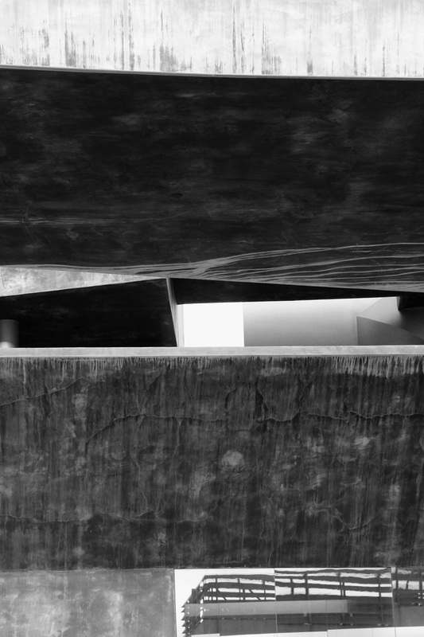

This website is a collection of creative outlets owned and operated by artist, explorer, entrepreneur, but mostly just some guy, Kevin Sapp. The name Aperture Scientist represents his photography, though the site has since grown to include: